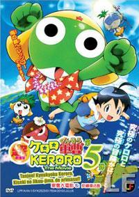

 The main plot of the story focuses on the steadily deteriorating conditions of the Keroro Platoon, a group of five, frog-like aliens from Planet Keron of the Gamma Planetary System. The platoon’s mission is to invade and conquer Earth (known to the aliens as “Pekopon”), but fail miserably at each attempt. Sergeant Keroro (or Keroro Gunso) although being the leader of the platoon, is childish, incompetent, and would rather spend his time indulging in his hobby of making plastic Gundam models than take over Earth. Aside from Keroro, there are four other members of the Keroro Platoon: adorable but violent Private Second Class Tamama; bellicose yet tenderhearted Coporal Giroro; intelligent but mischievous Sergeant Major Kururu; and disciplined but traumatized Lance Corporal Dororo. The largest obstacle in the way of their mission is the Hinata Family, who must take care of the Keroro Platoon due to the Keron Army deserting the latter on Earth. Keroro is kept busy with manual labor and constant abuse, primarily from the family daughter, Natsumi. Each member of the platoon finds himself in the care of a human: Giroro's human is Natsumi Hinata, whom he falls in love with; Keroro's human is Fuyuki Hinata, who considers the Sergeant his only true friend; Kululu's human is Mutsumi Saburo, who discovered him; Dororo's human is Koyuki, a fellow ninja; and Tamama's human is his equal in bipolar insanity, Momoka Nishizawa. All are tied to the Hinatas in some way throughout the events in the anime and manga.